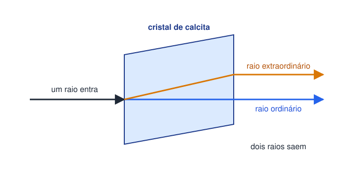
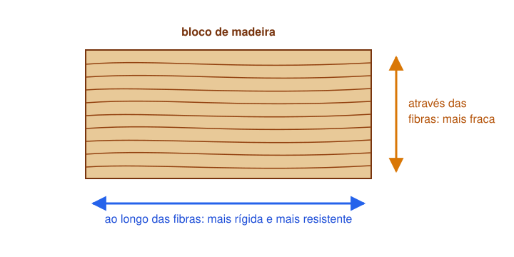
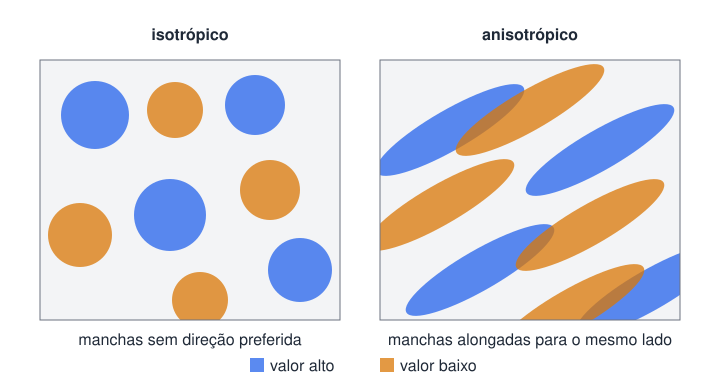
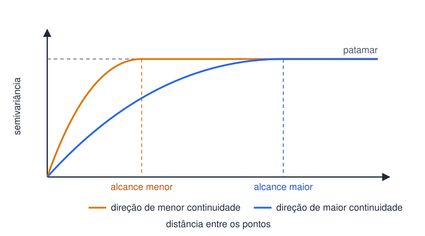
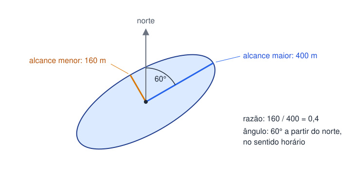

Um vídeo de marcenaria me devolveu à geoestatística
Minha relação com a geoestatística e com a análise espacial começou cedo na graduação em Estatística. Publiquei, com colegas, o artigo Estimadores de semivariância: uma revisão (Ciência e Natura, 2016). Depois, no mestrado, defendi a dissertação Geoestatística espaço-temporal: modelagem de fenômenos naturais no espaço-tempo. Os outros trabalhos sobre semivariograma e dependência espacial estão na minha lista de publicações.
Recentemente comecei a atuar em um projeto de movelaria, e me mandaram um vídeo sobre o funcionamento da madeira. O vídeo comentava sobre anisotropia, um conceito que estudei bastante, que apesar do nomes assustador possui aplicação real, e não é tão difícil de enteder. Só que ali ela estava em uma tábua, e eu a conhecia de mapas.
Este texto faz o caminho do vídeo ao mapa. Antes da madeira, passo pela luz, que tem o exemplo mais clássico do conceito.
Um cristal mostrou duas imagens de uma coisa só
Em 1669, o dinamarquês Rasmus Bartholin descreveu um cristal de calcita que dividia um raio de luz em dois (New World Encyclopedia, Double refraction). Quem olha um texto através do cristal vê cada letra duas vezes, o nome deste fenômeno é a birrefringência, ou dupla refração.
Os dois raios têm nome: o ordinário atravessa o cristal com a mesma velocidade em qualquer direção. A velocidade do extraordinário depende da direção em que ele viaja lá dentro (Molecular Expressions, Birefringence, Florida State University). O raio extraordinário chega a andar uns 12% mais rápido que o ordinário.

Existe uma direção dentro do cristal em que a duplicação some. Ao longo dela, a luz passa com uma velocidade só, como passaria por um vidro, de acordo com a Florida State University. O cristal é o mesmo. Mudou apenas o lado por onde a luz entrou.
Ninguém racha lenha de lado
A madeira ensina a mesma coisa sem sair da floresta. O tronco é feito de fibras alinhadas, que o marceneiro chama de veio. A madeira é mais rígida e mais resistente ao longo das fibras, porque é nessa direção que a maior parte da celulose está alinhada (Wikipedia, Orthotropic material).
Por isso o machado entra a favor do veio. Ali ele só precisa afastar uma fibra da outra. Atravessado, teria de cortar todas.

Uma tábua não tem “a resistência”. Tem uma para cada direção. Quem projeta uma viga precisa saber primeiro para que lado as fibras correm.
A resposta depende de para onde você aponta
A birrefringência da calcita e o veio da madeira são a mesma propriedade, e ela tem nome. Anisotropia é a falta de uniformidade conforme a direção: a medida muda quando muda a direção em que se mede. O oposto é a isotropia (Wikipedia, Anisotropy). O vidro é isotrópico para a luz. A calcita e a madeira são anisotrópicas.
Gosto desses dois exemplos porque eles tiram o conceito do abstrato. Ninguém precisa de equação para entender que a lenha tem lado.
Dado com coordenada também pode ter “veio”. A documentação de um programa de mineração dá o exemplo de depósitos minerais formados em camadas, com direções preferenciais de mineralização (Maptek, ajuda do Vulcan, Anisotropies). O minério varia pouco para quem anda ao longo da camada e muito para quem a atravessa. É a tora, só que no mapa.
O semivariograma pergunta a que distância e esquece para que lado
A geoestatística é o ramo da estatística que trata de dados espaciais (Wikipedia, Geostatistics). Ela parte de uma observação simples: pontos próximos tendem a ter valores parecidos, e a semelhança se perde com a distância.
A ferramenta que mede essa perda é o semivariograma. Para cada distância \(h\), ele junta os pares de pontos separados por mais ou menos essa distância e calcula metade da média do quadrado das diferenças entre os valores (Wikipedia, Variogram):
\[ \hat{\gamma}(h) = \frac{1}{2N(h)} \sum_{(i,j)} (z_i - z_j)^2 \tag{1}\]
Em Equação 1, \(z_i\) e \(z_j\) são os valores medidos nos dois pontos de um par. A soma percorre os pares separados pela distância \(h\), e \(N(h)\) é o número desses pares. O resultado, \(\hat{\gamma}(h)\), é a semivariância. Semivariância baixa quer dizer pares parecidos.
A curva costuma subir com a distância e depois estabilizar. Dois números dela interessam aqui, com a definição do mesmo verbete:
- Patamar. O valor em que a curva estabiliza;
- Alcance. A distância em que ela praticamente chega ao patamar.
Além do alcance, conhecer o valor de um ponto não ajuda a adivinhar o do outro.
Repare no que a conta fez com os pares. Ela juntou todos os que estão à mesma distância, apontem para o norte ou para o leste. Em geral se supõe isotropia, e a semivariância depende só da distância. Ou seja, podemos estar tratando a madeira como se fosse vidro.
Quando a suposição falha, dois pontos à mesma distância podem ser parecidos em uma direção e muito diferentes na outra. O semivariograma passa a mudar com a distância e também com a direção. É aí que a geoestatística também considera anisotropia (Esri, ajuda do ArcGIS Pro, Accounting for anisotropy).

No mapa da direita, ande 100 metros ao longo de uma mancha e você continua dentro dela. Faça o mesmo na outra direção e você trocará de mancha.
Quatro curvas onde havia uma
O jeito de enxergar a anisotropia é parar de misturar as direções. Calcula-se a Equação 1 várias vezes. Em cada uma só entram os pares cuja linha aponta para perto de uma direção escolhida. O resultado se chama semivariograma direcional.
Um guia da MetricGate sugere quatro direções, 0, 45, 90 e 135 graus (MetricGate, Anisotropic variogram fitting). A tolerância diz o quanto um par pode desviar da direção e ainda entrar na conta.
É nela que mora o risco. Com tolerância estreita demais, sobram poucos pares em cada direção e o sinal some. Com tolerância larga demais, as direções se misturam de novo e a anisotropia some na média.
Se as quatro curvas saem iguais, o dado é isotrópico e nada muda. Se saem diferentes, o tipo da diferença importa.

O eixo horizontal é a distância entre os pontos e o vertical é a semivariância. As duas curvas chegam ao mesmo patamar. Só o alcance muda: na direção azul, a semelhança entre os pontos dura mais longe.
Três números desenham a elipse
Esse caso, de patamar igual e alcance diferente, é a anisotropia geométrica. No dado isotrópico, a região em que um ponto ainda se parece com os vizinhos é um círculo, com raio igual ao alcance. Na anisotropia geométrica, o alcance muda com a direção e desenha uma elipse.
Três números bastam para descrever a elipse em duas dimensões
- Alcance maior. O alcance na direção em que a semelhança vai mais longe. É o eixo comprido da elipse;
- Razão de anisotropia. O alcance menor dividido pelo alcance maior, um número entre 0 e 1;
- Ângulo. A direção do eixo comprido, em graus, medida no sentido horário a partir do norte.
Um exemplo inventado para fixar: alcance maior de 400 metros, razão de 0,4 e ângulo de 60 graus. O alcance menor é 400 vezes 0,4, ou 160 metros.

O nome “geométrica” vem do conserto. Esse tipo de anisotropia se reduz à isotropia com uma transformação linear das coordenadas. Em palavras simples, gire o mapa até o eixo comprido ficar alinhado e estique o eixo curto até a elipse voltar a ser círculo. No mapa esticado, o dado é isotrópico de novo.
A krigagem que desenha bolinhas
O semivariograma existe para alimentar a krigagem, o método que estima o valor em pontos não amostrados a partir das observações vizinhas. É ela que transforma amostras soltas em mapa contínuo.
Com um semivariograma isotrópico, a krigagem supõe a mesma correlação em todas as direções. Um vizinho a 100 metros para o norte é tratado como tão informativo quanto um vizinho a 100 metros para o leste.
Quando o “veio” é forte, o mapa pode sair errado de um jeito reconhecível. No exemplo de geoquímica, a krigagem isotrópica borraria os limites do minério em círculos. O corpo alongado viraria uma fileira de bolinhas.
A krigagem também não avisa do erro. Ela devolve, junto com cada estimativa, uma variância de erro, e essa medida só vale se o semivariograma estiver correto. Semivariograma errado, incerteza errada.
A elipse tem o seu próprio limite. Uma elipse só para o mapa inteiro supõe que as mesmas propriedades estatísticas valem em toda parte. Quando o veio muda de direção no meio da área, uma elipse única volta a ser uma média de coisas diferentes.
Antes de interpolar, procure a direção
Três práticas para qualquer dado com coordenada:
- Olhe as direções antes de ajustar. Calcule os semivariogramas direcionais antes de aceitar uma curva só para o mapa inteiro;
- Compare patamar e alcance. Patamar igual e alcance diferente pedem a elipse. Patamar diferente é anisotropia zonal e pede outro tratamento;
- Desconfie das bolinhas. Mapa interpolado cheio de manchas redondas, em um fenômeno que você sabe ser alongado, pode ser sinal de direção ignorada.
O marceneiro olha o veio antes de serrar. Da próxima vez que alguém entregar um mapa interpolado, pergunte para que lado as “fibras” correm.